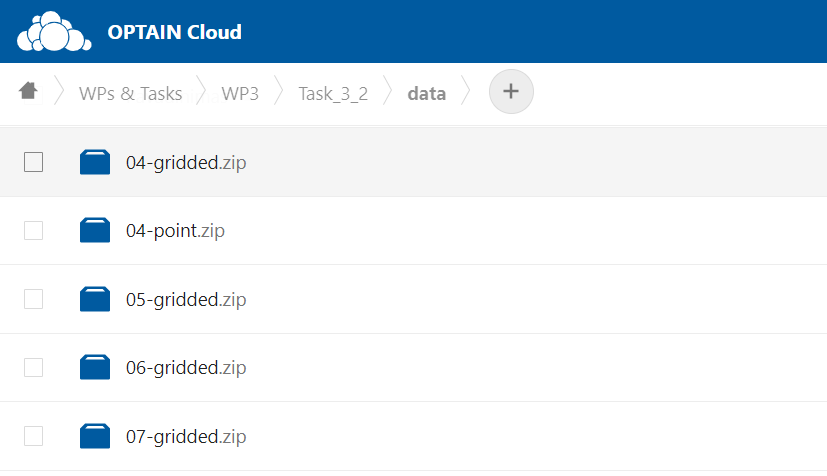

Introduction
Climate data in the OPTAIN project for each case study site could be obtained from UFZ-Cloud. It is located under WPs&Tasks>WP3>Task_3_2>data path.

Numbers are referring to a case study number and gridded.zip
files contains NetCDF files with climate data for each case
study basin. Data are provided for precipitation, solar radiation,
relative humidity, min, max, mean temperature and wind speed variables.
Time period covered is starting from 1981-01-01 while ending 2099 or
2100. Three representative concentration pathways (RCPs) available
(RCP2.6, RCP4.5, RCP8.5) and six regional climate models (RCMs).
Detained information about RCMs is provided in the table below.
| Model number | Driving Model (GCM) | Ensemble | RCM | End date |
|---|---|---|---|---|
| 1 | EC-EARTH | r12i1p1 | CCLM4-8-17 | 31.12.2100 |
| 2 | EC-EARTH | r3i1p1 | HIRHAM5 | 31.12.2100 |
| 3 | HadGEM2-ES | r1i1p1 | HIRHAM5 | 30.12.2099 |
| 4 | HadGEM2-ES | r1i1p1 | RACMO22E | 30.12.2099 |
| 5 | HadGEM2-ES | r1i1p1 | RCA4 | 30.12.2099 |
| 6 | MPI-ESM-LR | r2i1p1 | REMO2009 | 31.12.2100 |
All RCMs data were bias-corrected to the ERA5-Land climate data. Description of data preparation and analysis of they is provided in the project deliverable D3.1: Climate scenarios for integrated modelling.
NetCDF to SWAT+ input
There is no direct way of using NetCDF data in the SWAT
model. Therefore tools have been prepared for the users and provided
included this package.
Extracting from NetCDF
First step to prepare SWAT+ climate input data is to download
XX-gridded.zip file for your case study site and to unzip it.
Then locate CORDEX-BC folder. Data extraction from
NetCDF is done with load_climate_lst function,
which only needs path to your basin shape file and path to
CORDEX-BC folder. Following lines provides an example how to
use it.
library(svatools)
basin_path <- "GIS/basin.shp"
cordex_path <- "climate/CORDEX-BC"
climate_lst <- load_climate_lst(cordex_path, basin_path)The function creates virtual stations for each NetCDF
grid cell, which basin boundary touches. Virtual stations coordinates
are defined as center of grid cell. Then for each of this virtual
station data are extracted and saved in the list of list format.

Evaluating climate data
Extraction result is arranged in specific format. RCP -> RCM are the top levels of the list format. Then format is same as with other meteorological data used in this package.
- Meteo data list
- stations sf Data frame (ID, Name, Elevation, Source, geometry, Long, Lat)
- data -> Station ID -> Variable -> Data frame (DATE, Variable)
Therefore other package function as plot_weather could be used to examine function results or to compare to measurement data, for instance with plot_weather_compare.
plot_weather(climate_lst[["rcp85"]][["1"]],"TMP_MAX", "year", "max") plot_wgn_comparison
function might be useful to get climate set statistical comparison with
motoring data.
plot_wgn_comparison
function might be useful to get climate set statistical comparison with
motoring data.
##Loading data from the template with load_template function
temp_path <- "my_folder/weather_data.xlsx"
met_lst <- load_template(temp_path, 4326)
##And plotting comparison of statistical values with climate data
plot_wgn_comparison(climate_lst[["rcp85"]][["1"]], met_lst, "ID4", "ID2", "Climate set", "Monitoring data", "comparison")
Other functions from Weather data section are also applicable. This allows to update SWAT+ .sqlite database with climate data, prepare weather generator parameters, etc.
Preparing SWAT+ input climate sets
Nevertheless prepare_climate function could be used to directly prepare/update model input text files needed to run each climate scenario. Nothing else is needed just to replace model input files with prepared set of files.
Following lines runs prepare_climate function in several loops and prepares all climate data input sets and folder structure.
##Path to your SWAT+ model project directory
project_dir <- "../output/overwrite/tmp"
##These files will be copied from model directory and updated with prepare_climate function
files_to_copy <- paste(project_dir, c("aquifer.con", "chandeg.con", "hru.con", "reservoir.con", "rout_unit.con", "time.sim"), sep="/")
##Main loop for each rcp
for (rcp in c("rcp26", "rcp45", "rcp85")){
##Each rcm
for (rcm in as.character(c(1:6))){
##Each period
for(p in list(c("H", "1988-01-01", "2020-12-31"), c("N", "2032-01-01", "2065-12-31"), c("E", "2067-01-01", "2099-12-31"))){
##Creating new directory
cli_dir <- paste("../output/cli", rcp, paste0("rcm", rcm), p[1], sep = "/")
dir.create(cli_dir, recursive = TRUE)
##Coping files to update
file.copy(files_to_copy, paste(cli_dir, c("aquifer.con", "chandeg.con", "hru.con", "reservoir.con", "rout_unit.con", "time.sim"), sep = "/"), overwrite = TRUE)
##Running function to prepare climate input for scenario
prepare_climate(climate_lst[[rcp]][[rcm]], cli_dir, p[2], p[3])
print(paste(rcp, "rcm", rcm, p[1], p[2], "-", p[3], "set prepared."))
}
}
}